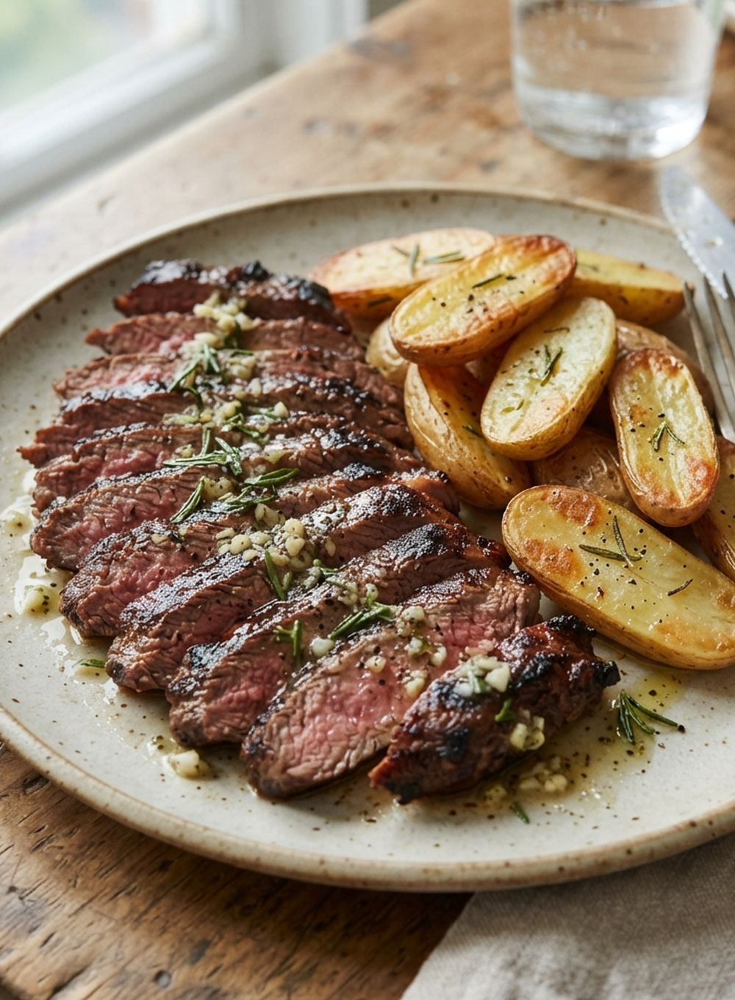
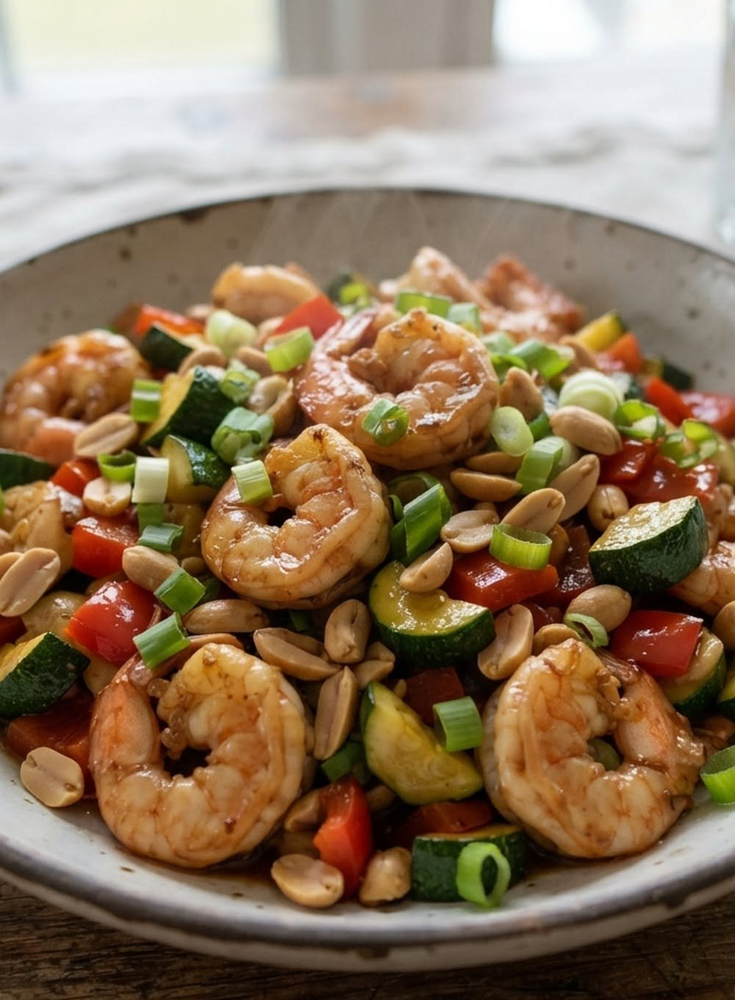
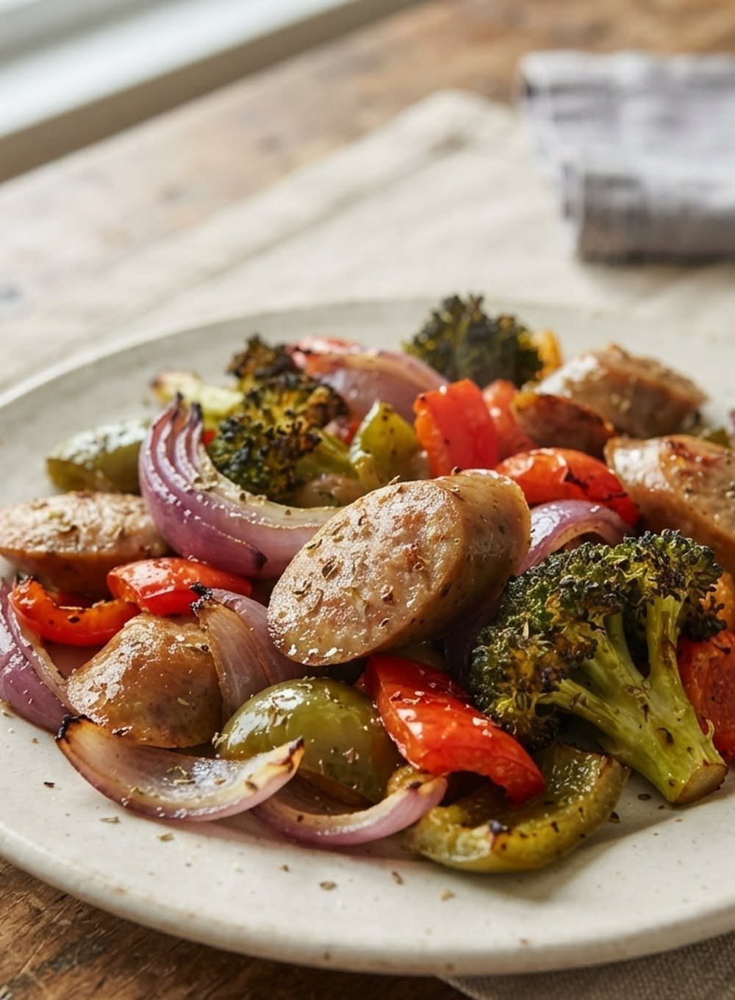

Recipe · Food
35-Minute Tuscan White Bean and Sausage Soup
Italian sausage, cannellini beans, and kale in a tomato broth, finished with Parmesan. A pot of comfort in about thirty-five minutes.
Ingredients
Recipe serves 4.
- 1 lbItalian sausage
- 1medium yellow onion
- 3medium carrots
- 3celery stalks
- 4 clovesgarlic
- 6 cupschicken broth
- 2 canscannellini beans, drained
- 1 candiced tomatoes
- 4 cupsfresh kale
- 1 tbspolive oil
- 1 tspdried oregano
- 1 tspsalt
- 1/2 tspblack pepper
- 1/2 cupParmesan cheese
Steps
- Step 1
Heat the olive oil in a large pot or Dutch oven over medium heat. Remove the casings from the Italian sausage and add the meat to the pot, breaking it up with a wooden spoon.
- Step 2
Cook the sausage until browned and fully cooked, about 6 to 8 minutes, then remove it with a slotted spoon and set it aside.
- Step 3
In the remaining drippings, add the diced onion, sliced carrots, and chopped celery. Sauté until the vegetables begin to soften, about 5 minutes.
- Step 4
Add the minced garlic and dried oregano, and cook for 1 minute, until fragrant.
- Step 5
Pour in the chicken broth, the drained cannellini beans, and the diced tomatoes with their juices. Bring the soup to a boil, then reduce the heat and simmer for 15 minutes.
- Step 6
Return the cooked sausage to the pot along with the chopped kale. Simmer for 5 more minutes, until the kale is tender and wilted.
- Step 7
Season with salt and black pepper to taste. Ladle into bowls and top with freshly grated Parmesan before serving.
The soup keeps. Cool it and refrigerate it for up to 3 days.
Want a different idea tonight? What's 4 Dinner spins a recipe by diet, cook time, and allergies.

More recipes

Garlic Butter Flank Steak
Sliced flank steak with garlic herb butter and roasted potatoes.

25-Minute Kung Pao Shrimp Stir-Fry
Shrimp, zucchini, and peanuts in a sweet-spicy sauce.

Sheet-Pan Sausage and Vegetables
Smoked sausage with broccoli, peppers, and red onion.
All weeknight recipes
Shrimp, chicken, tacos, steak, soup, sausage, spaghetti, and a five-night plan.